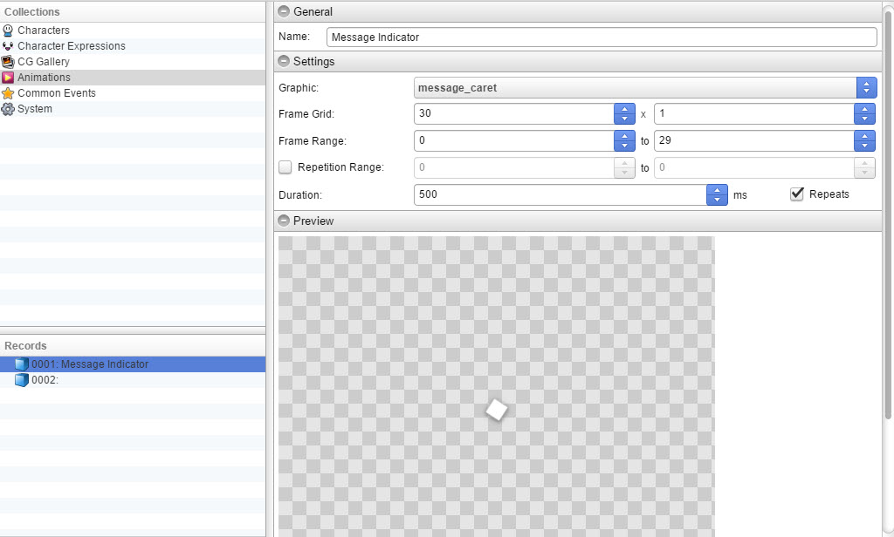
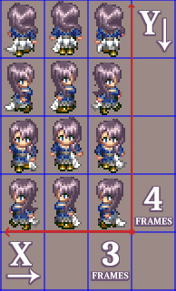

Animations

常规
Name- 动画的名称。
设置
图形- 动画的文件。 

Frame Grid- 每行 (X) 和每列 (Y) 的帧数。
Frame Range- 动画从 0 到最大值的帧数。如果有 30 帧，则范围是 0~29。
Repetition Range- 循环动画的起始帧和结束帧。
Duration- 动画的长度。
Repeats- 如果勾选，动画将循环播放。
预览
游戏中的动画预览。